Actual browser JPEGs. Click any thumbnail to inspect its full capture. Screenshots precede the final small refinements; no recaptures followed the user's stop request.
Back to launcher (when the development server is running)
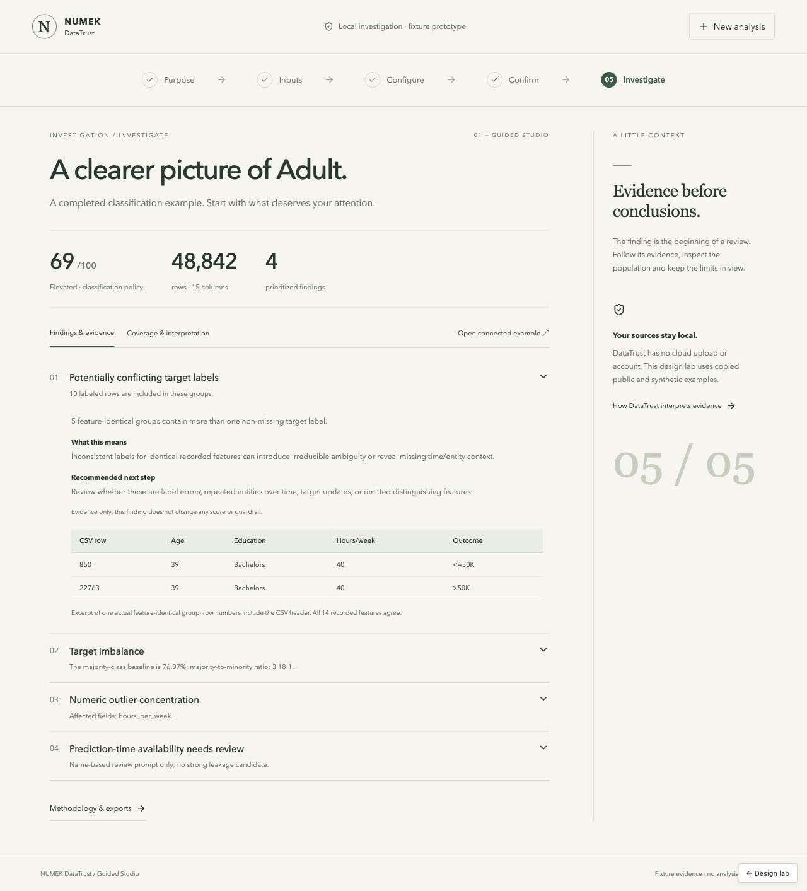
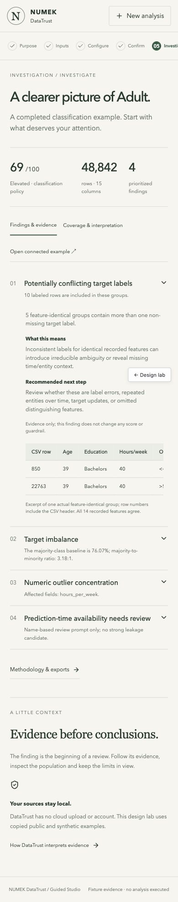
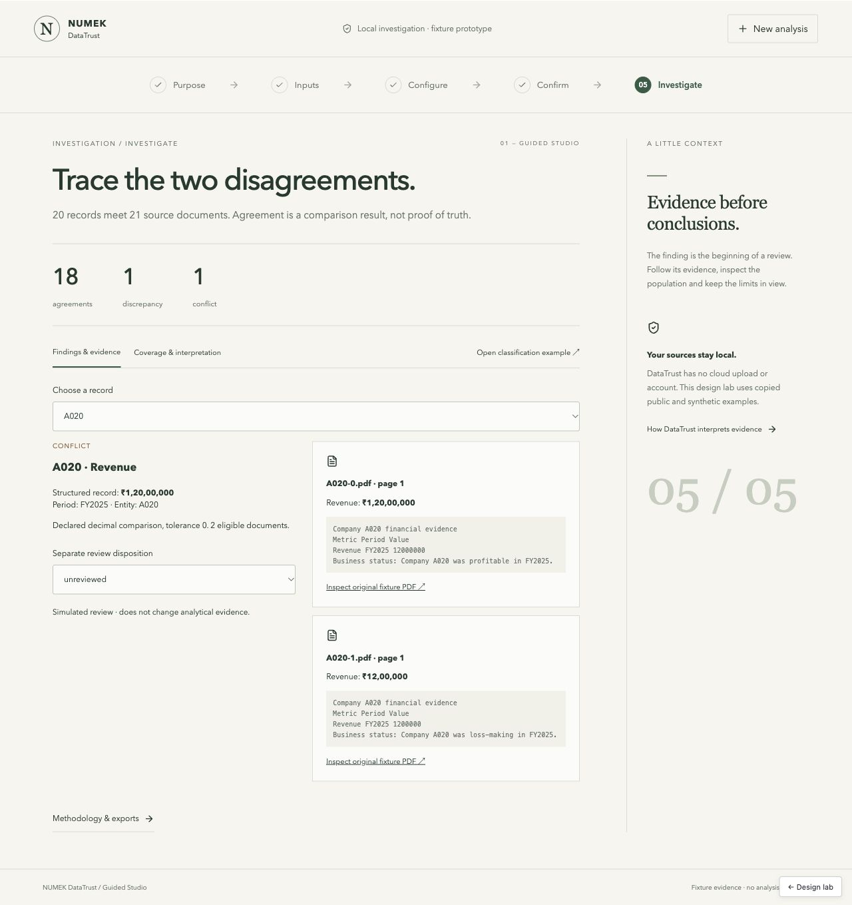
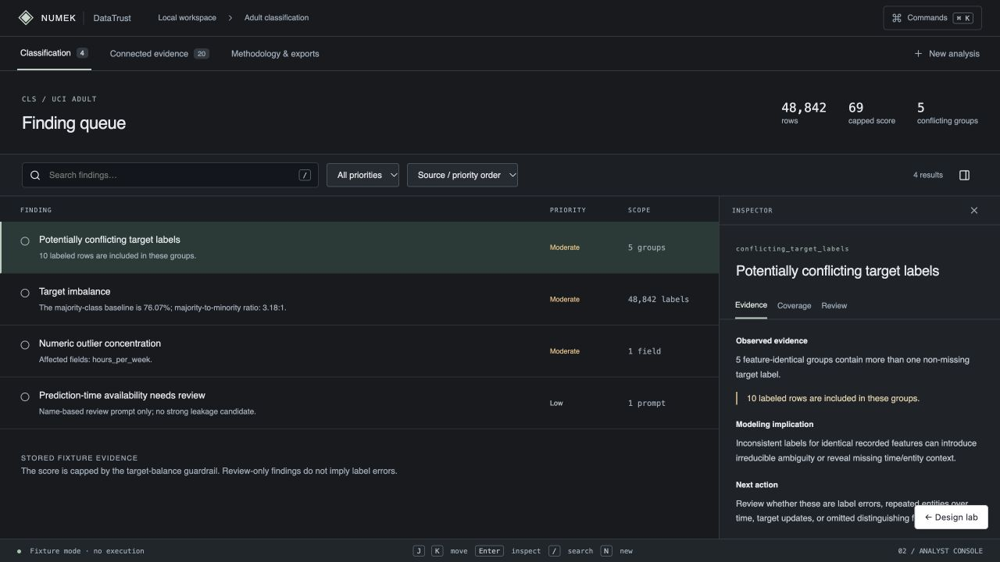
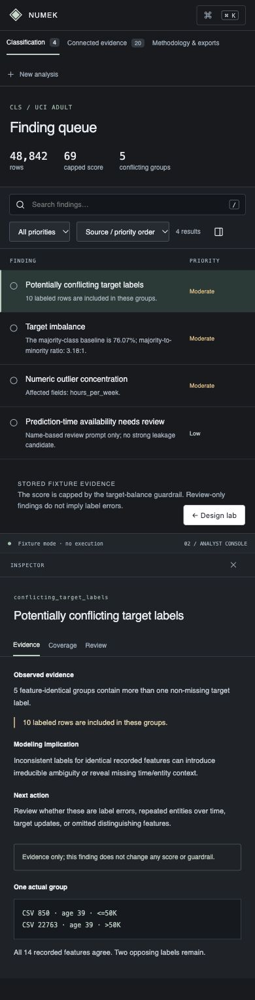
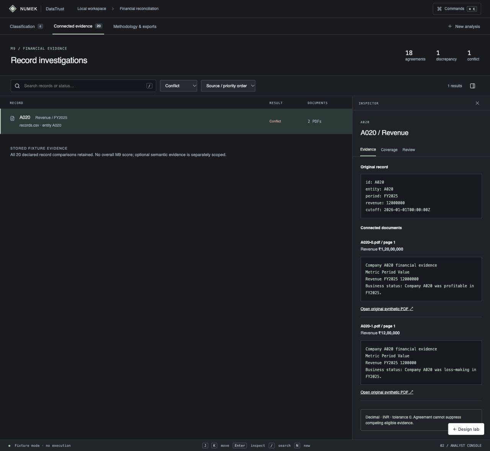
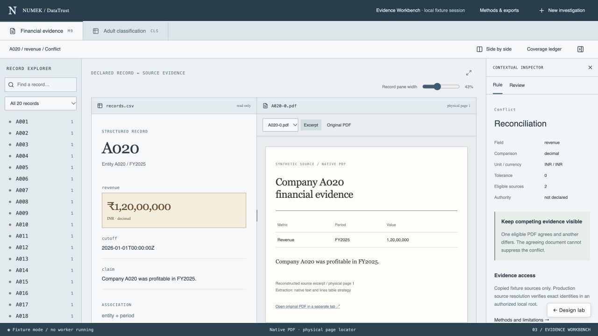
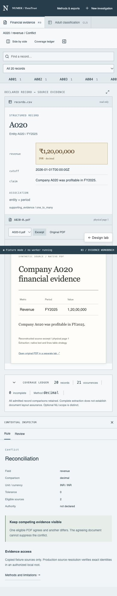
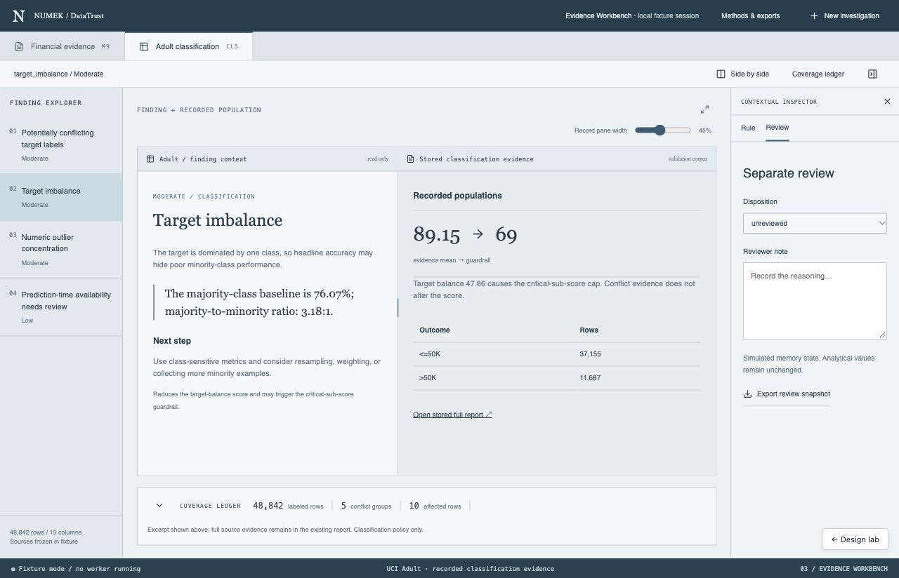
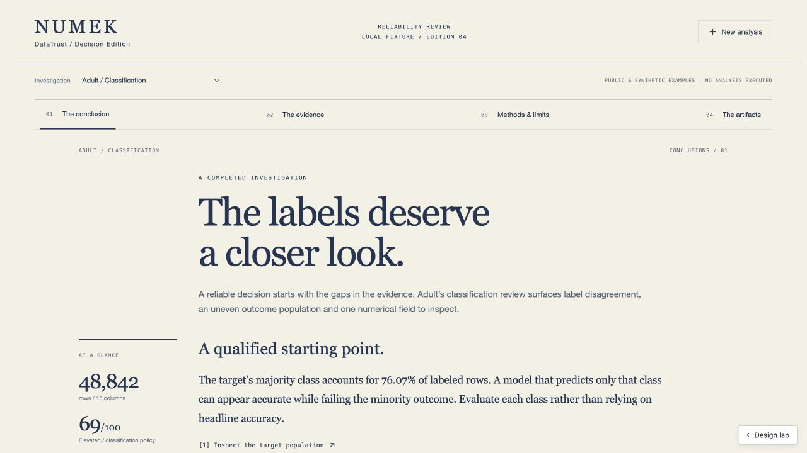
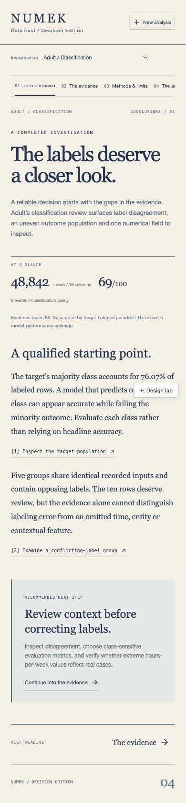
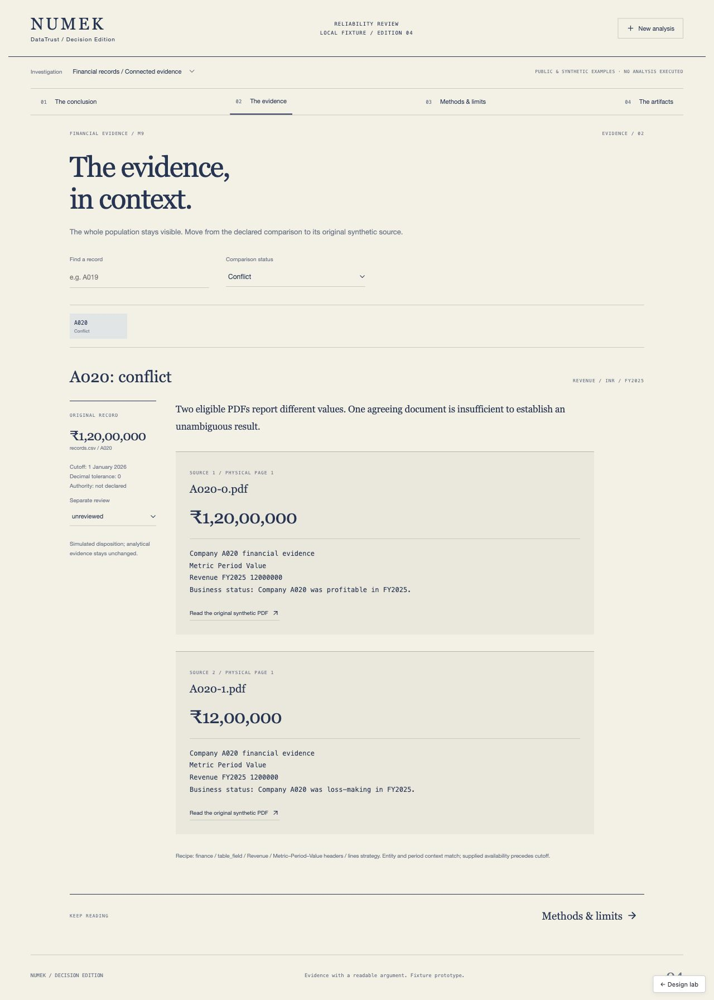
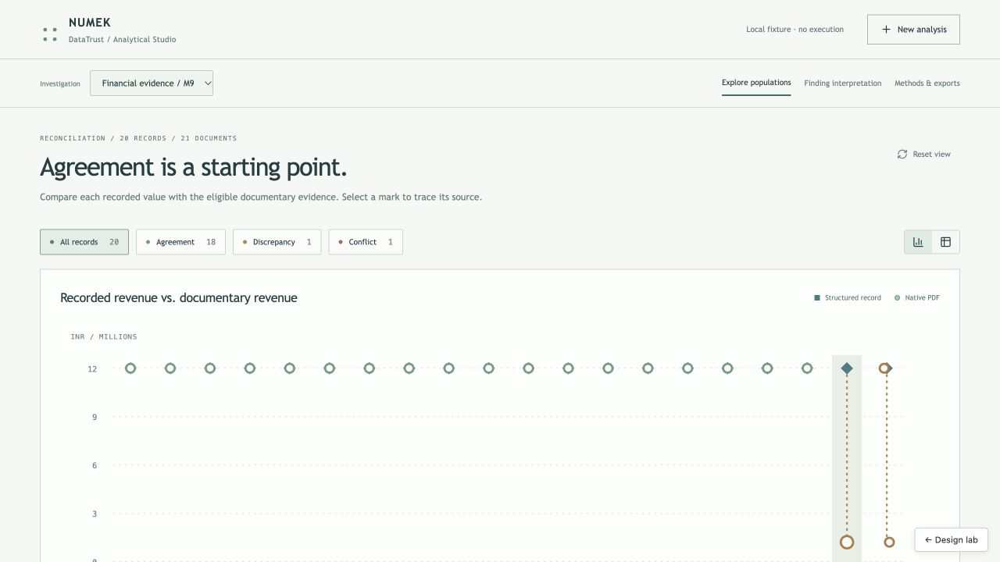
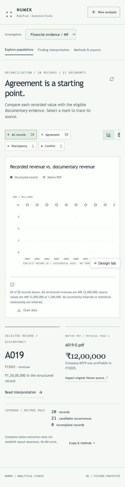
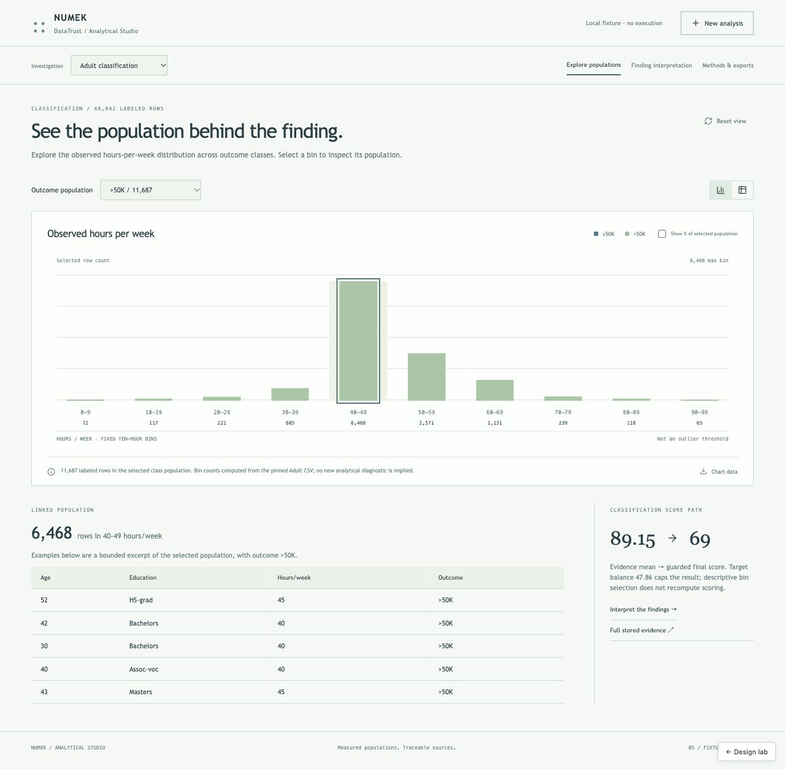